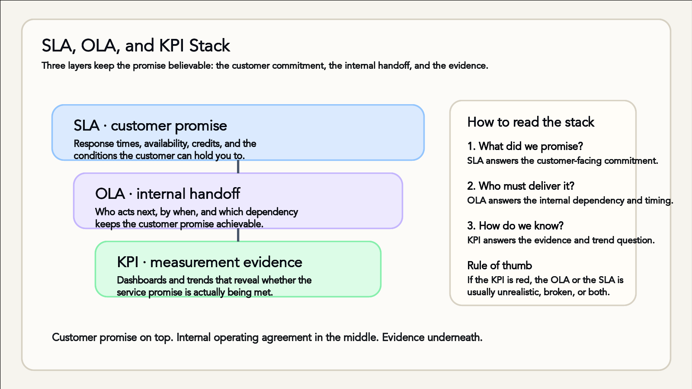

Service Level Agreements, OLAs and KPIs
Defining success for support teams
Understanding SLAs
- Set expectations with customers
- Document response and resolution times
- Outline consequences for missed targets

The customer promise rests on internal handoffs, with measurement evidence underneath
Operational Level Agreements
- Internal commitments between teams
- Clarify dependencies for each workflow
- Keep cross-functional support on track
KPIs and continual improvement
- Measure service health and trends
- Report progress to stakeholders
- Adjust targets as business needs change